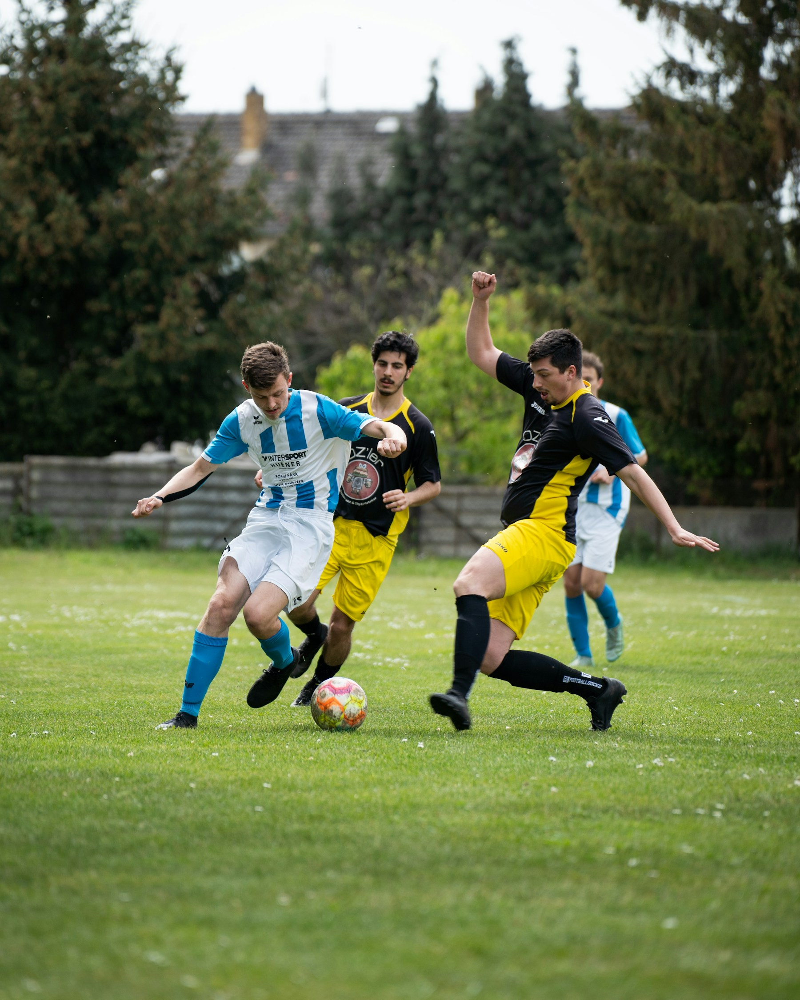
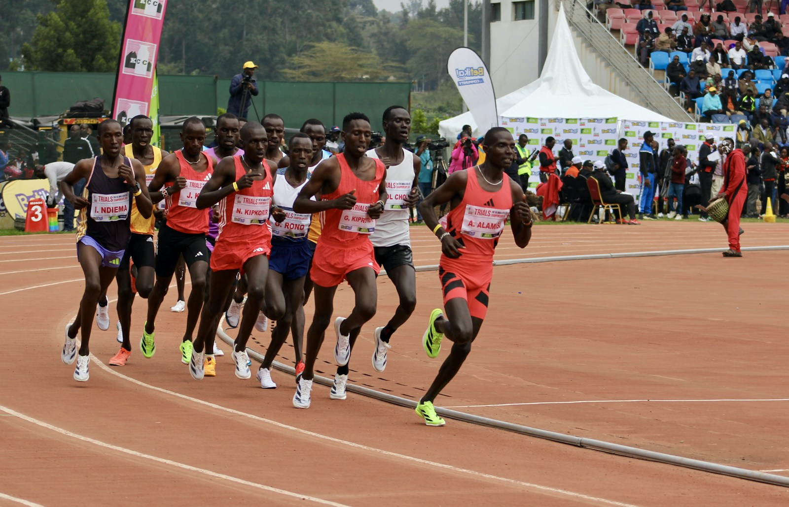

PRECIS DÄR DET HÄNDER.
HELA
KÄNSLAN.
Små marginaler. Stora ögonblick.
Sport genom Tobbe Bengtsons lins.

NÄRA SPELET.FRÅN SIDLINJEN
Det senaste.
Rakt från planen.
BILDARKIVET
Hitta ditt ögonblick.
Matcher, tävlingar och allt däremellan.
Utforska bilderna, sport för sport.
EXEMPELGALLERIER / Bilder från Unsplash
Inga evenemang hittades
Prova ett annat sökord eller välj en annan sport.
Du ser ett första webbplatsförslag. Bilder, album och datum är exempel och ersätts med Tobbes eget material.

FART. FOKUS. FOTOGRAFI.BAKOM KAMERAN
Hej, jag är Tobbe.
Sport är mer än resultat.
Det är människorna, nerven
och känslan i stunden.
Jag heter Tobbe Bengtson. Här samlar jag sportens ögonblick genom min kamera — för dig som var där, och dig som vill uppleva det igen.
Följ @tobbessportfotonFRÅN SIDLINJEN
Senaste nytt.
LÅT OSS HÖRAS
Nästa ögonblick.
Ditt evenemang?
Vill du boka fotografering, fråga om en bild
eller bara säga hej? Hör av dig.
Gäller det en bild? Ange gärna evenemang och bildnamn i ditt mejl.